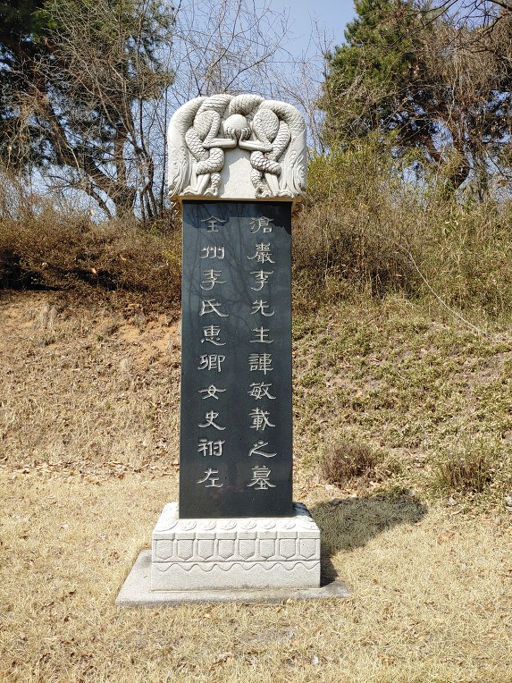
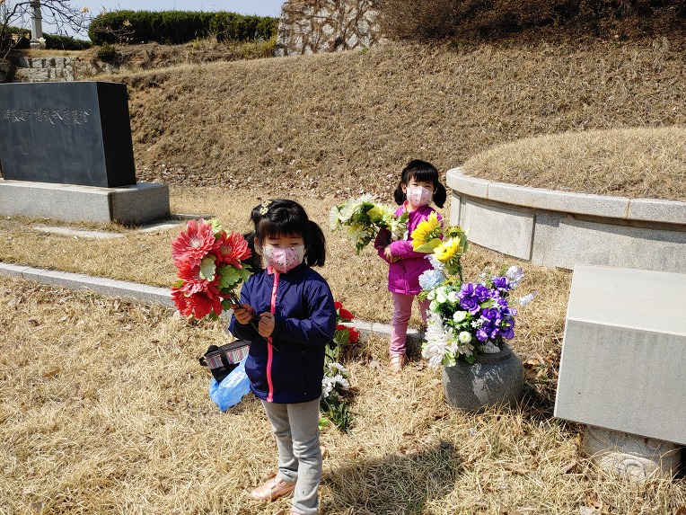
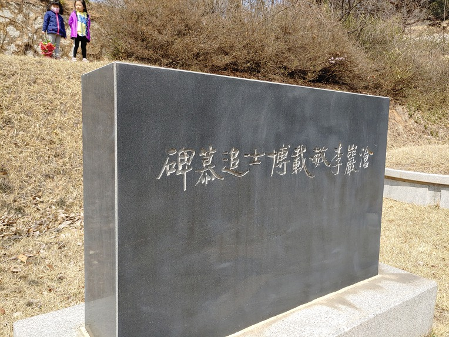
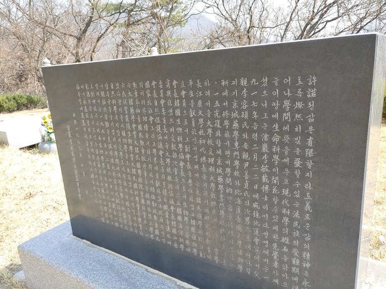
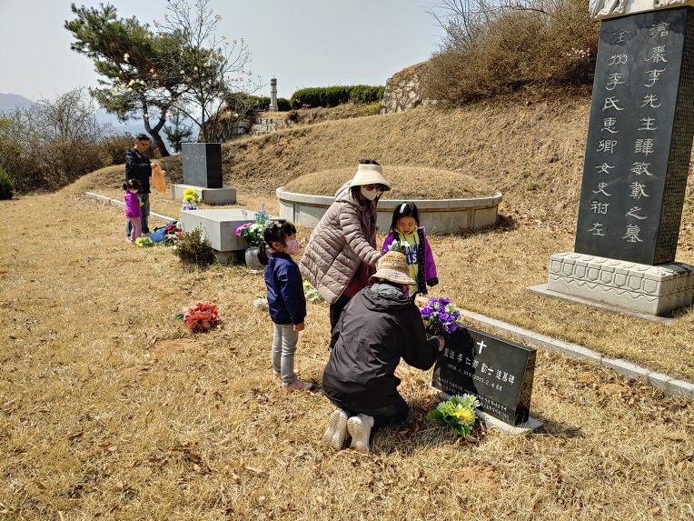
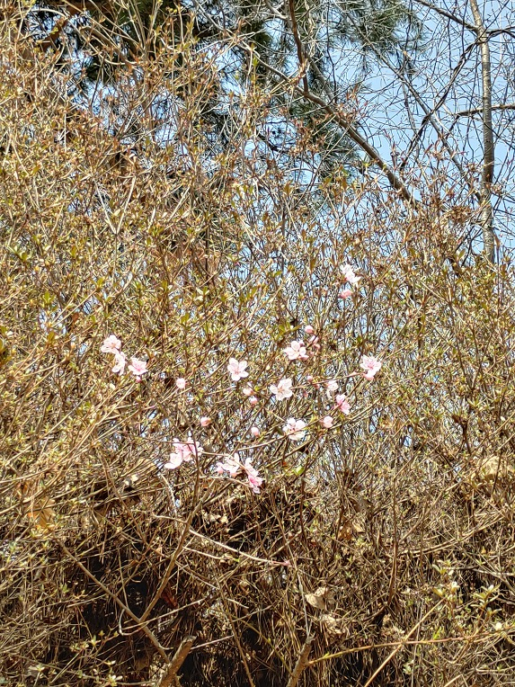

한식(寒食). 불을 멀리하여 찬음식을 먹는다는 한국의 명절이며 긴겨울을 지내고 조상묘소에 문안드리는 날로 알고있다.
성묘사진을 몇장 올린다. 증손녀들의 재롱이 함께하였다.
묘비는 당대 최고의 서예가로 꼽는 여초 김응현 쓰다. 여초선생은 아버지 지인으로서 서울대 문리과대학 서예써클인 동방연서회를 지도하셨고 누님의 스승이기도 하다.


아버지 제자들 중심으로 추모사업회를 구성하여 3주기되는해 추모비를 건립하였다. 또한 아버지 집필과 지인들의 추모의 글들을 모은 遺作 '自然과 人間'이 이때 출간되었다.



덤불을 헤치고 매화나무(도화?)가 꽃을피웠다
